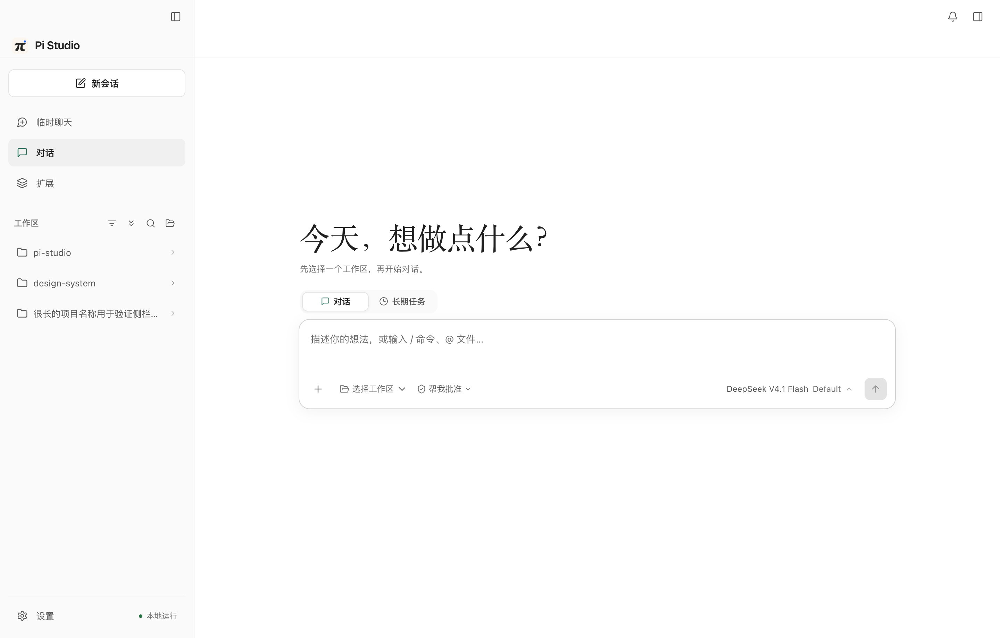
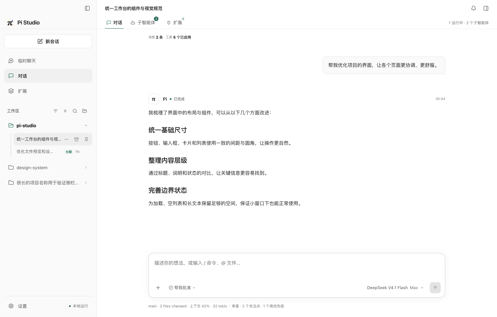
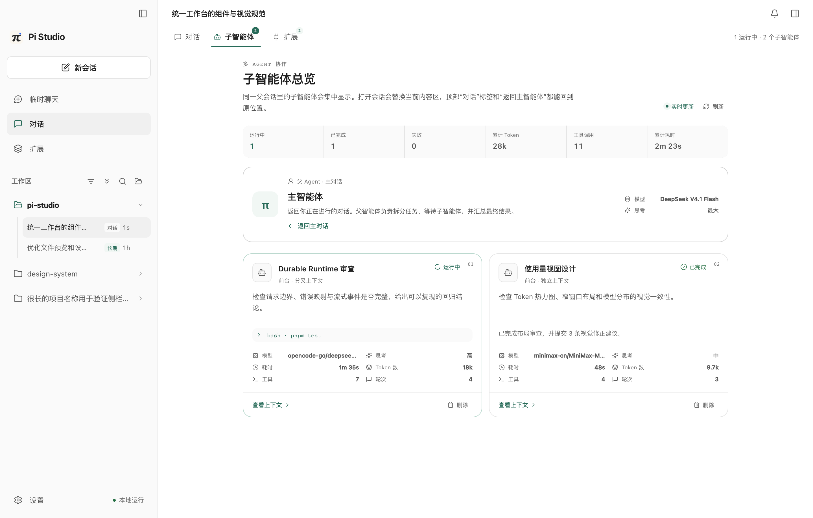
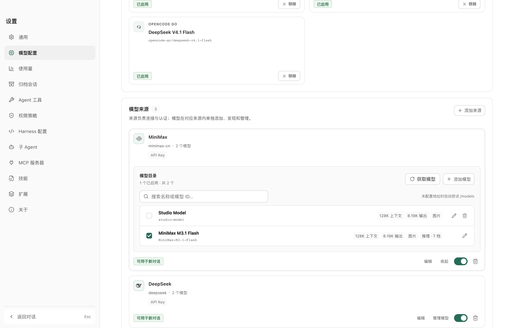
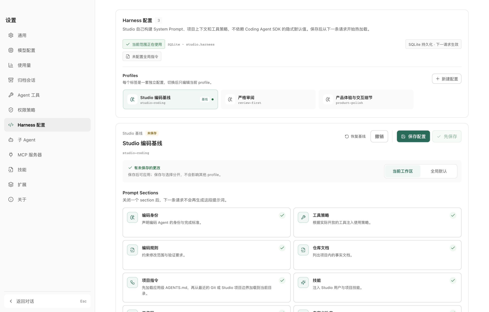
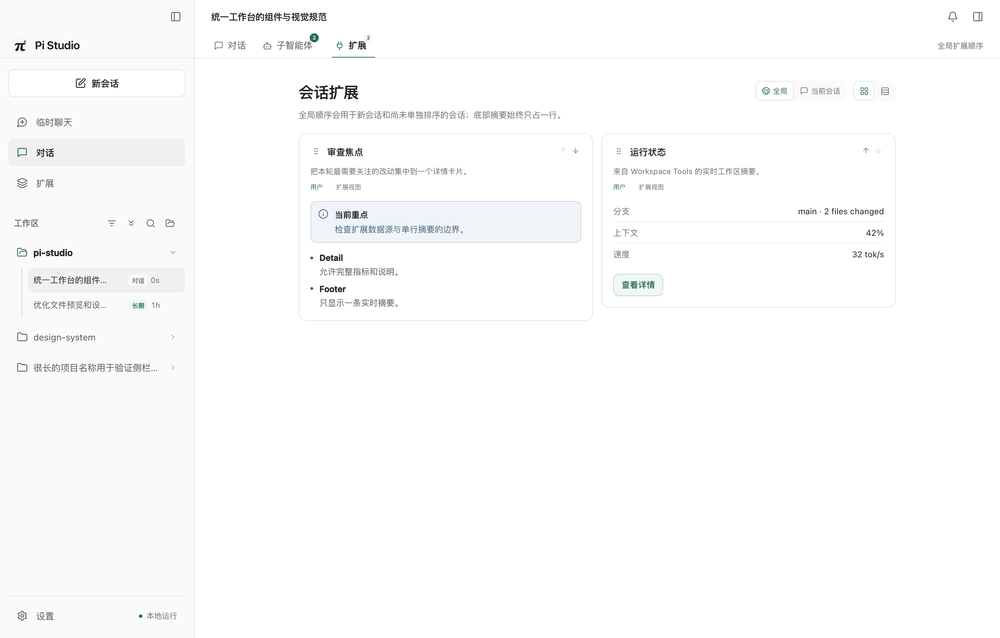
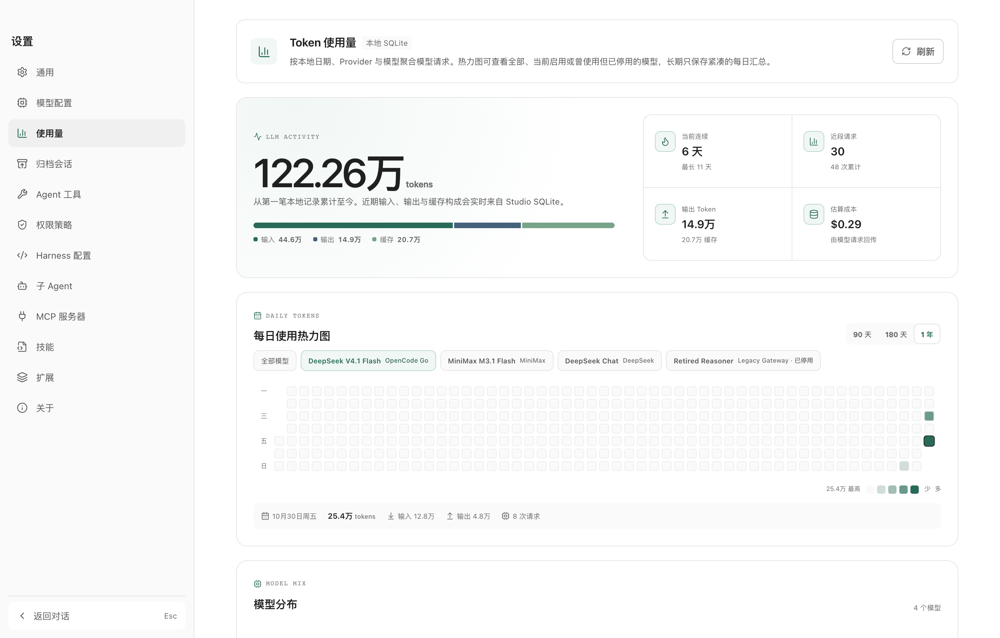

使用、扩展与实现手册
从第一次打开应用，到理解 Durable 请求如何穿过 Electron、SQLite 与扩展宿主；
从配置模型与 Harness，到开发、签名、发布和安装自己的扩展。这里描述 Pi Studio 当前
main 分支的产品边界和技术契约。
v0.0.6 完善了附件与文件预览边界、图片复制、长期任务安全阀、配置热加载和退出可靠性。会话、任务与子智能体由 Durable 执行；模型、凭据、工作区、MCP、Skill 与扩展由 Pi Studio 自己的 SQLite 和受管目录保存。
Pi Studio 是什么
一套本地优先的桌面 Agent 工作台，把 Pi Durable 的执行能力、Studio 的数据管理与可组合 Harness 放进同一个窗口。
Pi Studio 的核心不是某一个聊天模型，而是一套可检查、可配置、可扩展的 Agent 运行环境。 普通对话、长期任务和子智能体都由 Pi Durable Harness 执行；Studio 负责工作区、模型来源、 凭据、系统提示、工具注册、资源信任、SQLite 投影与原生桌面交互。
会话、任务、流式事件、工具调用、分叉、恢复和 owned child conversation。
窗口、菜单栏、通知、更新、文件系统、附件和原生主题。
Studio 自己的设置、投影、凭据、扩展状态和项目资源信任。
Prompt sections、AGENTS.md、Skill、工具说明、工作目录和自定义补充。
四类可以独立理解的资源
| 资源 | 它解决什么 | 典型入口 |
|---|---|---|
| 会话 | 保存消息、工具轨迹、模型选择和运行状态 | 左侧栏、对话 Tab |
| 工作区 | 确定项目目录、项目资源、文件与差异范围 | 左侧工作区列表、输入框工作区选择器 |
| 配置 | 模型、Harness、权限、工具、Skill、MCP 与扩展 | 设置页 |
| 扩展 | 增加工具、命令、Prompt section、hooks、tasks 与声明式 UI | 会话扩展 Tab、设置 → 扩展 |
Pi Studio 不读取或修改 ~/.pi、Pi CLI 的 settings.json、auth.json 或 models.json。Studio 的数据属于 Studio，模型凭据使用 Electron safeStorage 保存。
完成第一次对话
先把模型、工作区和权限打通；Harness、Skill 与扩展都可以在稳定使用后继续配置。

1. 安装应用
从 Releases 选择 Apple Silicon 或 Intel 安装包。构建使用固定的 Pi Studio 自签名证书，但该证书不等同于 Apple Developer ID 或公证，macOS 仍可能阻止首次启动：
xattr -cr "/Applications/Pi Studio.app"也可以右键应用 →「打开」→ 再点击「打开」。通过终端移除隔离标记只解决本机首次启动；固定自签名用于保证后续应用内更新的签名身份连续，不提供 Apple 信任链。
2. 配置模型来源
进入 设置 → 模型配置，添加来源 ID、服务地址、API 协议和密钥。支持 OpenAI Completions、OpenAI Responses、Anthropic Messages 与 Google Generative AI；模型发现地址是可选项，手动添加模型仍然可用。
- 从来源发现模型时，Studio 会读取可用的模型列表，并尝试补全上下文、输出、图片与 reasoning 能力。
- 手动添加时，至少需要模型 ID；建议同时填写展示名、上下文长度、最大输出、图片与 reasoning 支持情况。
- 上下文和输出长度可以使用 K、M、T 等单位；保存时统一换算为数值。
- 设置新对话默认模型，并给支持 reasoning 的模型配置默认 thinking。
3. 添加工作区并开始
左侧工作区入口选择项目目录，然后点击「新会话」。在输入框上方选择「对话」或「长期任务」、工作区与权限策略，发送第一条消息。
@ 文件把工作区中的文件或目录加入上下文。
/ 命令执行 Studio 命令、Skill、扩展命令或会话动作。
图片进入支持视觉的模型；超长粘贴可以保存为文本附件。
运行中可以停止；队列输入和 steer / follow-up 由 Durable 管理。
界面地图
每个区域对应一个明确职责，避免把任务、扩展和运行时状态混进主对话正文。

| 区域 | 用途 | 不会放置什么 |
|---|---|---|
| 左侧栏 | 新会话、临时聊天、扩展入口、工作区、会话历史、设置 | 完整扩展详情或大段运行日志 |
| 顶部会话 Tabs | 对话、子智能体总览、扩展面板 | 不同工作区的会话混在一起 |
| 主内容区 | 消息、工具调用、thinking、结果、子智能体 transcript | 扩展 summary、文件 diff 全文 |
| 右侧面板 | 工作区文件、预览、差异工作台 | 对话消息正文 |
| 输入框 | 工作区、类型、权限、模型、thinking、附件、队列 | 常驻的营销通知或临时 toast |
| 会话 footer 扩展 | 一行实时指标、额度或运行摘要 | 可滚动长表、详情按钮或嵌套卡片 |
点击子智能体卡片会将主内容区替换为该子智能体会话，并提供明确的「返回主智能体」。扩展 Tab 集中展示声明式详情，支持全局或当前会话独立排序。
工作区与临时对话
工作区是项目资源的精确边界；临时对话是明确不落盘的隔离工作区。
普通工作区
Studio 使用规范化后的绝对 cwd 精确匹配工作区。普通会话、项目 Skill、项目扩展和权限覆盖都跟随这个工作区。
- 工作区可以重命名、排序、归档和删除。
- 删除工作区会同时影响其下会话；归档会话可以在设置页恢复或永久删除。
- 项目 Harness 指令是例外：它会从最近的
.git或.pi-studio边界逐级加载到当前目录。 - 父目录中的普通 Skill、扩展或工作区权限不会自动继承给子目录。
临时对话
临时对话使用独立的 Durable MemoryStorage 和空 registry。它可以使用已配置的模型与凭据，但不加载工作区工具、扩展、MCP、Skill 或项目指令。
关闭最后一个临时对话或退出应用后，transcript、图片和临时运行状态会消失。需要保存的文件或结果应在会话结束前主动导出或复制。
对话与长期任务
两类持久会话共用一个 Harness 和执行链路；长期任务多一个目标与更完整的任务生命周期。
新会话入口把「对话 / 长期任务」做成轻量切换。提交时 Studio 创建同一种 Durable conversation；
长期任务会把第一条目标描述、完成条件和执行状态写入 Durable document。只要目标仍处于执行中，
Studio 就通过 Durable 原生 GenerationTask.onYield 开始下一轮，直到模型报告已验证完成、
明确阻塞、用户暂停目标，或触发单次轮次/连续无进展安全阀。阈值可在 Harness 配置中调整；
自动暂停会保留原因并等待确认后继续；普通对话在单次回答后保持空闲。
| 能力 | 普通对话 | 长期任务 | 临时对话 |
|---|---|---|---|
| Durable 持久化 | 是 | 是 | 否，MemoryStorage |
| Harness / 工具 / 工作区 | 是 | 是 | 否 |
| Goal 与任务生命周期 | 否 | 是 | 否 |
| 侧边栏历史 | 是 | 是 | 当前进程内 |
| 可停止 / 继续 | 是 | 是 | 是 |
会话历史按页加载，右侧提问大纲基于完整会话。点击尚未加载的旧提问时，Studio 会补载并定位；主内容区不会一次性渲染全部历史。
模型与 thinking 可以随时切换。当前请求保持已提交配置，切换从下一请求生效；运行中不需要禁用模型选择器。
子智能体
每个子智能体拥有独立的 Durable conversation、上下文、模型、thinking 和工具权限。

内置 subagent 工具通过 Durable owned child conversation 创建子智能体。父会话以工具任务为归属，不额外创建一条普通侧边栏会话。
- 支持前台与后台并行执行、
bg_wait、subagent_stop。 - 子智能体可以通过
contact_supervisor请求父智能体协助。 - 父智能体使用
subagent_supervisor查看并回复子智能体。 - 父会话取消或工具任务失败时，Durable ownership cascade 会终止 child。
- 每个子智能体可以使用自己的模型与 thinking；未设置时继承父会话默认。
会话顶部的「子智能体」Tab 是聚合视图。点击卡片会把主内容区替换为该子智能体的 transcript；返回按钮始终回到原父会话，不会创建第二条主会话路径。
文件、附件与差异
项目上下文在右侧面板查看；真正的文件改动按回合汇总到差异工作台。
- 输入框支持图片、文本附件、
@文件/目录和拖放。 - 右侧文件面板支持目录浏览、文本预览、代码高亮、换行与最近文件缓存。
- 差异工作台按会话回合聚合 Git 变更，可以查看文件级 patch、展开全部、自动布局和跳到文件。
- 文件预览、diff 与附件都只向 renderer 传递结构化 DTO，不暴露主进程路径对象或凭据。
- 不在 Git 仓库或没有补丁时，Studio 会退化为只读文件预览，不伪造 diff。
读写工作区外文件属于权限边界问题。只读工具访问工作区外默认要求确认；写入当前工作区之外由权限 hook 阻止或要求明确规则。Bash 的越界识别属于保守静态检查，不是 OS 沙箱。
模型与推理
来源、模型目录、凭据、默认值与每个会话的运行选择是四层不同数据。

模型来源与字段
一个来源可以包含多个模型，也可以只手动添加其中一部分。来源保存 Base URL、协议、发现地址和密钥；模型保存 ID、展示名、上下文、最大输出、图片、reasoning 与 thinking levels。
| 字段 | 用途 | 缺失时 |
|---|---|---|
| 模型 ID | 请求 API 的真实 model 字段 | 不能保存 |
| 上下文 / 输出 | UI 判断与运行时限制提示 | 显示未知或来源建议值 |
| 图片 | 是否允许图片附件 | 保守按不支持处理 |
| Reasoning | 是否显示 thinking 控制 | 隐藏或禁用 thinking |
| Thinking levels | 该来源接受的推理等级集合 | 使用模型或全局默认策略 |
默认值与会话选择
全局默认模型只用于新会话。已有会话保存自己的模型与 thinking；重新安装应用或切换会话不会强制改写正在保存的会话配置。
设置页可以配置全局默认 thinking，也可以按模型记忆 thinking。会话级选择优先于新会话默认值；运行中切换从下一请求生效。
API Key 由主进程通过 safeStorage 加密。renderer 只收到“已配置 / 未配置”；扩展只有在声明 provider.credentials、获得用户同意并命中 providerAccess 范围时，才可通过受控 capability 读取指定 provider 凭据。
Harness 配置
普通持久对话和长期任务都使用 Harness；临时对话是唯一例外。

Studio 默认使用「Studio 编码基线」Profile。Profile 由 Prompt sections、section override、附加指令和逐工具 guidance 组成；每个工作区可以选择一个完整 Profile 覆盖全局默认。
| Section | 内容 |
|---|---|
preamble | 编码 Agent 身份、证据优先与完成标准 |
tools | 本次实际开放工具及使用策略 |
rules | 读取、最小修改、验证与诚实报告 |
repositoryDocs | 可读取的仓库文档索引 |
projectContext | 应用级与项目级 AGENTS.md |
skills | Skill 元数据与按需读取入口 |
cwd | 当前主工作区 |
addendum | 当前 Profile 的自定义补充 |
AGENTS.md 加载顺序
<Studio userData>/AGENTS.md
<最近项目边界>/AGENTS.md
<最近项目边界>/.pi-studio/AGENTS.md
... 从边界逐级向下 ...
<cwd>/AGENTS.md
<cwd>/.pi-studio/AGENTS.md最近边界由 .git 或 .pi-studio 确定。同层先读根 AGENTS.md，再读 .pi-studio/AGENTS.md；最多 8 个文件、单个 128 KiB、合计 256 KiB。修改后从下一次模型请求开始生效。
Harness 对哪些会话有效
| 会话类型 | 工作区 Profile | 全局运行策略 |
|---|---|---|
| 普通持久对话 | 是 | 是 |
| 长期任务 | 是 | 是 |
| 临时对话 | 否 | 否，使用独立内存 Harness |
Durable 运行策略是全局资源，控制所有 Studio 会话的请求超时、重试、上下文压缩、工具并行、失败后排队输入、崩溃恢复和缓存。它不是工作区 Profile 的一部分。
权限策略
“工具存在”“工具被模型选择”“工具获准执行”是三件不同的事。
权限策略可以按 user、精确工作区和精确会话配置。每次 ToolTask 执行前重新读取 SQLite。所有命中的显式规则共同参与裁决：
deny > ask > allow
硬保护
→ user + workspace + session 显式规则
→ 最具体策略层的模式默认值
→ 执行| 模式 | 默认行为 | 适用场景 |
|---|---|---|
请求批准 ask | 普通工具逐次确认 | 首次接触项目或来源不完全可信 |
帮我批准 smart | 只读、安全快捷路径自动允许；风险或未知工具确认 | 日常编码，兼顾速度与控制 |
完全权限 full | 普通工具、跨工作区操作和动态脚本默认允许；明显删除、系统破坏和显式 deny / ask 继续生效 | 不希望普通操作反复打断，但仍保留危险命令保护 |
批准可以记住为仅本次、本会话、本工作区或始终。会话层 allow 不能覆盖上层 deny；权限 hook 与工具白名单分别生效。
Agent 扩展在主进程 Node 环境运行，Bash 边界检测是保守静态分析。动态脚本、未识别包装器或任意程序仍可能绕过静态判断。需要强隔离时，应使用容器、受限账户或操作系统沙箱，或者不要启用 bash。
智能体工具与来源
工具目录从 Durable registry 生成；白名单选择暴露给模型的子集，权限决定每次调用是否执行。
设置页按来源聚合工具：Pi 核心、内置扩展、用户扩展、项目扩展和 MCP。每个工具会展示稳定名称、用途、来源、路径与当前启用状态。
- 内置
todo为多步骤请求维护输入框上方的紧凑计划；状态保存在 Durable conversation document，支持依赖、完成、结束、归档和恢复。 - 白名单支持精确名称和
*glob，最多 256 项。 - MCP 工具仍受 MCP exposure 与应用级白名单双重过滤。
- 父智能体创建子智能体时，工具集合是父会话 model tools 与子智能体白名单的交集，并始终排除递归
subagent。 - 卸载工具不会删除历史消息里的旧调用记录；新请求不再提供该工具。
技能
Skill 是 Markdown 指令包。系统提示只注入元数据，正文由模型按需读取。
| 优先级 | Scope | 目录 |
|---|---|---|
| 1 | 项目私有 | <workspace>/.pi-studio/skills |
| 2 | 项目通用 | <workspace>/.agents/skills |
| 3 | 用户私有 | <Studio userData>/skills |
| 4 | 用户通用 | <home>/.agents/skills |
Studio 递归发现 SKILL.md，遇到 Skill 根目录即停止向下扫描。frontmatter 使用 YAML，至少需要可解析的名称与 description。同名冲突保留发现顺序更靠前的 Skill，并在诊断中列出其余路径。
- 系统提示只包含 name、description 与绝对路径；正文通过本次开放的
read或bash读取。 /skill:<name>是确定性显式加载；disable-model-invocation: true只隐藏自动路由。- 项目 Skill 默认不信任。信任指纹覆盖隐藏文件、内容、权限和符号链接。
- 任意文件或链接变化会让旧信任失效，必须重新检查。
- Studio 不读取 Pi CLI 的 Skill 配置，但兼容公开的
.agents/skills目录约定。
MCP 服务器
Studio 支持 stdio 与 Streamable HTTP，并把工具按需发现交给 Durable 的 tool_search。
MCP server、启停状态、exposure、逐工具覆盖、超时、stdio 工作目录和 HTTP headers 保存在 Studio SQLite。env 与 header 的值使用 safeStorage envelope；renderer 只收到键名。
| Exposure | 模型看到什么 | 适合 |
|---|---|---|
direct | 工具直接进入当前请求 | 高频且数量很少的工具 |
deferred | 先看 namespace / 摘要，通过 tool_search 加载 | 默认选项，工具多的 server |
hidden | 模型不能直接调用，仅供其他工具 executeTool() | 内部被组合调用的能力 |
- 远程 HTTP endpoint 必须使用 HTTPS；只有回环地址允许开发期明文 HTTP。
- stdio 只继承 PATH、HOME、临时目录、locale 与启动所需环境；其他密钥必须用
${NAME}显式传入。 - 配置变化会重连或重建 registry；旧 client 进入退休态，等活动工具调用结束后再关闭。
tools/list_changed只刷新对应 server，下一次模型请求看到新目录。- 当前未接入 MCP OAuth、独立 resources/templates 浏览器、prompts、sampling、tasks 与 MCP Apps UI。
扩展系统
扩展分为 Agent 能力和声明式 UI 两层。内置、用户和项目扩展使用同一份契约。

| 类型 | 运行位置 | 能力 |
|---|---|---|
| Agent 扩展 | Electron 主进程 Node | tools、sections、hooks、tasks、commands |
| UI 扩展 | Studio renderer 的统一组件 | 声明式内容、受控动作、实时 dataView |
扩展 scope 分为 builtin、user 和 project。内置默认信任；用户扩展默认信任；项目扩展默认不信任，必须由用户检查来源、权限和内容后手动信任。
设置页负责安装、启用、检查、信任、升级、回滚和卸载；会话扩展 Tab 只负责显示当前会话相关面板与状态。底部 footer summary 固定一行，完整详情进入扩展 Tab。
manifest 权限用于契约校验和安装审计，不会把 Node 代码变成沙箱。network 也是审计标记，不会阻止扩展访问网络。安装 Agent 扩展等同于信任本机 Node 代码。
使用量统计
按本地日期和模型聚合请求数量与 Token，而不是保存每一条请求明细。

设置页可以查看全部模型或切换到某个当前启用模型。已停用但历史上使用过的模型仍保留在筛选器和统计中，避免重装或停用后丢失理解上下文。
热力图使用主题强调色，按每天累计使用量分档。聚合表只保存日期、模型和累计值；不需要把一天中的每个请求都永久投影到 Studio SQLite。
桌面体验
主题、背景、菜单栏、通知和更新都是 Studio 产品层能力，不进入模型上下文。
- 亮暗主题、四套全局强调色、圆角、字号和背景由统一设计令牌控制。
- 背景支持静态图片、GIF、动态 WebP 与 MP4 / MOV / WebM；透明度、柔化和界面遮挡直接影响内容表面。
- 关闭主窗口可以继续驻留菜单栏，显示运行中的会话与一轮完成通知。
- 应用会在启动、前台使用和重新聚焦时检查 GitHub Release。
- 下载完成后由用户选择立即重启安装，或保留到下一次退出。
菜单栏和应用内通知只做入口，不复制完整对话。点击通知会回到对应会话；没有被启用的通知可以静默留在通知中心。
开发扩展
先确定能力属于 Tool、Command、Prompt section、Task 还是纯 UI，再选择最小权限。
一个扩展目录至少包含 pi-studio.extension.json。只有 Agent 扩展需要 runtime.durableEntry 指向目录内的 .js 或 .mjs。
{
"format": 1,
"id": "review-tools",
"name": "Review Tools",
"version": "1.0.0",
"publisher": "example",
"license": "MIT",
"repository": "https://github.com/example/review-tools",
"engines": { "piStudio": ">=0.0.3 <0.2.0" },
"permissions": ["agent.tools", "ui.commands"],
"runtime": { "durableEntry": "extension.mjs" },
"contributes": {
"tools": [{
"name": "review_checklist",
"description": "Read the repository review checklist."
}],
"commands": [{
"id": "review",
"title": "开始代码审查",
"placement": "composer",
"argumentHint": "[focus]"
}]
}
}Agent contribution
import {
defineExtension,
defineTool,
Type,
} from "@earendil-works/pi-durable";
const checklist = defineTool({
name: "review_checklist",
description: "Read the repository review checklist.",
parameters: Type.Object({
path: Type.Optional(Type.String()),
}),
replay: "safe",
async execute(args, api, context) {
const agent = await api.agent(context);
const target = args.path || ".pi-studio/REVIEW.md";
return {
output: [{
type: "text",
text: `Review ${target} from ${agent.cwd}`,
}],
};
},
});
export const durableExtension = defineExtension({
name: "review-tools",
tools: [checklist],
});activate(context) 可以获得 apiVersion、extensionId、manifestId、scope、清洗后的 manifest 和持久化 dataDirectory。扩展不得把运行数据写入版本代码目录；卸载并选择保留数据时，只有 dataDirectory 跨版本保留。
稳定贡献 ID
<scope>:<manifest-id>/<contribution-id>
user:review-tools/review
project:review-tools/review
builtin:studio-subagents/subagentscope 是 ID 的一部分，因此用户扩展和项目扩展可以同名共存。UI action 只能引用本扩展的 panel、command 和 runtime；跨扩展引用会在 manifest 校验时失败。
生命周期与清理
热重载、停用、撤销项目信任、回滚和卸载前都会调用 cleanup() 或导出的 deactivate()。每个清理函数只执行一次；某个清理失败不会阻止其他扩展卸载。
声明式 UI
扩展提交 JSON 数据和语义动作；Studio 决定布局、颜色、字号、圆角、动画和可访问性。
语义内容，不包含 HTML 或 CSS。
受数量和嵌套上限约束的数据可视化。
Studio 在窄窗口自动收敛布局。
只能触发白名单动作，不能直接访问 IPC。
| Slot | 用途 | 关键限制 |
|---|---|---|
conversation.header | 会话顶部单行摘要 | 只放 text、badge、keyValue 或紧凑 dataView |
conversation.detail | 会话扩展 Tab 的完整详情 | 展示数据与操作，不覆盖主对话 |
conversation.footer | 输入框附近的一行状态 | 最多两个紧凑 block，不滚动，不放完整详情 |
workspace.sidebar | 工作区相关短内容 | 必须适配窄宽度 |
composer.before | 输入框上方上下文 | 不抢输入框主操作焦点 |
settings.panel | 设置页说明或状态 | 不替代完整表单 |
panel.side | 右侧面板摘要 | 不创建新导航体系 |
status.bar | 底部状态 | 只放短文本或简单动作 |
dataView 只在已经挂载且可见时订阅。切换会话、关闭窗口、停用、重载或组件卸载时都会执行 provider 清理；扩展不能自行绘制浮层或后台全量推送。
打包、签名与安装
先隔离，再验证；版本不可变；完整性、发布者身份和用户信任分开确认。
node tools/cli/pi-studio-extension.mjs init ./pi-metrics \
--id pi-metrics \
--name "Pi Metrics" \
--publisher huangrx6
node tools/cli/pi-studio-extension.mjs validate .
node tools/cli/pi-studio-extension.mjs keygen --out ~/.pi-studio/keys
node tools/cli/pi-studio-extension.mjs sign . \
--private-key ~/.pi-studio/keys/publisher-private.pem
node tools/cli/pi-studio-extension.mjs verify . \
--public-key ~/.pi-studio/keys/publisher-public.pem
node tools/cli/pi-studio-extension.mjs pack . --out release --json规范包名类似 pi-metrics-1.0.0.pi-extension.zip，可包含 signature.json、integrity.json、README、LICENSE 与 manifest。ZIP 路径越界、符号链接、加密 / 分卷 ZIP、未知压缩算法和超出大小限制都会在隔离区被拒绝。
安装链路
source
→ resolve
→ quarantine
→ path / archive / symlink checks
→ manifest / runtime / UI validation
→ Pi Studio compatibility
→ permission diff
→ external SHA-256 + per-file integrity
→ Ed25519 signature / publisher key
→ install preview
→ user consent
→ atomic activate- SHA-256 证明内容完整，不能单独证明发布者身份。
- Ed25519 签名绑定扩展 ID、版本、publisher、公钥指纹和内容树。
- 新增权限、执行代码、providerAccess 或依赖必须重新确认。
- 同一 ID 与版本不能替换不同内容；发布新文件必须提升 version。
- 升级保留旧版本用于 rollback；项目扩展内容树变化会撤销旧信任。
- 可用来源包括本地目录、ZIP、固定 HTTPS 摘要、GitHub Release 与静态 registry。
运行时架构
renderer 只处理 JSON-safe DTO；Durable 执行、凭据、文件和扩展代码都留在主进程边界之后。
React renderer
│ typed window.piApi
▼
Electron preload / IPC
├─ validation and ownership checks
├─ Studio SQLite settings / projections
├─ model catalog and safeStorage credentials
├─ Skill / MCP / extension registry
└─ file, attachment, updater, menu bar
│
▼
Pi Durable 1.4 Harness
├─ conversation / task / live event
├─ tools / hooks / sections / modelTools
├─ context compaction and tool scheduler
└─ owned child conversations
│
▼
Model providerelectron/services/durable-runtime.cjs 是唯一共享运行时装配点。electron/ipc/sessions.cjs 把 Durable 的提交、任务状态、实时事件、分页、分叉、模型与 thinking 切换映射成 renderer contract。
扩展、MCP、Skill 和 Harness 在下一请求边界热刷新；外部文件 handle、Durable task 对象、凭据明文和原始扩展实现都不能穿过 renderer 契约。
数据与作用域
Studio SQLite 保存 Studio 的资源与投影；Durable 在同一数据库的不同表中保存执行事实。
<Studio userData>/
├── AGENTS.md
├── pi-studio.sqlite
│ ├── durable_* # Durable 执行事实
│ ├── conversations # Studio 侧栏与任务投影
│ ├── settings / model_* / credentials
│ ├── mcp_servers / studio_extensions
│ └── project_resource_trust
├── skills/ # 用户级 Skill
├── extensions/<id>/<version>
├── extension-state/
├── extension-data/
└── extension-cache/
<home>/.agents/skills/ # 跨客户端用户 Skill
<workspace>/
├── AGENTS.md
├── .agents/skills/
└── .pi-studio/
├── AGENTS.md
├── skills/
└── extensions/<id>/<version>| 资源 | 有效 scope | 冲突规则 |
|---|---|---|
| AGENTS.md | 应用 + 项目目录链 | 项目更具体；后加载覆盖先加载 |
| Harness Profile | 全局默认 + 精确工作区 | 工作区选择一个完整 Profile |
| Durable 运行策略 | 应用 | 单一全局策略 |
| 模型默认值 | 应用 | 只用于新会话 |
| 会话模型 / thinking | 会话 | 会话选择优先，下一请求生效 |
| 工具权限 | user + workspace + session | deny > ask > allow |
| 智能体工具白名单 | 应用 | 单一白名单 |
| Skill | user + 精确工作区 | 项目私有 → 项目通用 → 用户私有 → 用户通用 |
| MCP | 应用 | 每 server 独立，再受 exposure / 白名单过滤 |
| 扩展 | builtin + user + 精确工作区 | core → system → optional → user → project |
Durable 与 Studio 使用同一个 SQLite 文件中的不同表，通过 WAL、busy_timeout 和连接职责协调。临时对话不进入这棵树。
热加载边界
配置保存后不需要退出应用，但并非所有变化都会追溯改写正在运行的请求。
| 修改 | 最早生效点 |
|---|---|
| 模型、thinking、Harness Profile | 下一次模型请求 |
| 扩展、Skill、MCP 与工具目录 | 下一次模型请求；权限规则可早到下一次 ToolTask |
| 权限模式与记住批准 | 下一次工具调用 |
| Durable 运行策略 | 下一次执行边界 |
| 主题、字号、背景与页面偏好 | 保存后立即 |
已经开始的流式回复、工具调用和 task phase 使用各自开始时的配置。Studio 设置页统一提示“下一请求生效”，避免让用户误以为正在生成的回复会被中途替换。
安全边界
Studio 已实现契约、数据、路径和发布者校验；这些机制不能替代操作系统隔离与代码审计。
已经实现
- renderer contract 仅接受 JSON-safe DTO；凭据、path handle 与 Durable object 留在主进程。
- API Key、MCP env/header 使用 Electron safeStorage envelope。
- 扩展入口 realpath containment、ZIP 路径与符号链接边界检查。
- manifest、contribution、UI content、action 和 dataView 严格清洗。
- 远程扩展来源使用 HTTPS、外部 SHA-256 或固定 GitHub commit；可选 Ed25519 发布者签名。
- 项目 Skill 与项目扩展使用内容指纹，变化后撤销旧信任。
- 工具权限在每次 ToolTask 前读取，覆盖模型直接调用、MCP 与 nested tool。
明确没有解决
- Agent 扩展一旦被信任，就拥有 Electron 主进程 Node 权限。
- SHA-256 不证明发布者身份；身份连续性依赖签名和首次公钥信任。
- Bash 静态分析无法覆盖所有动态 shell 语义、脚本和未知包装器。
- 目前没有透明日志、Sigstore / DSSE 身份链或系统级进程沙箱。
- MCP 使用静态 headers，没有 OAuth 登录界面。
只安装能够审查或确实信任的 Agent 扩展。声明式 UI 不执行 HTML、CSS 或 JS，但项目扩展仍可能来自不受信任仓库；信任前应检查 manifest、文件树、权限和运行入口。
仓库结构
按主进程、服务、IPC、renderer、测试、工具和资源边界组织，避免把源码、测试和截图堆在一级目录。
pi-studio/
├── electron/
│ ├── core/ # SQLite、模型、序列化、扩展契约
│ ├── services/ # Durable、文件、MCP、Skill、发行
│ ├── ipc/ # typed preload / IPC boundary
│ ├── main.cjs # lifecycle and module assembly
│ └── window.cjs # native window / menu / theme
├── web/src/
│ ├── components/ # renderer UI
│ ├── lib/ # pure renderer-safe helpers
│ ├── types/ # renderer contracts
│ └── styles/ # tokens and component styles
├── tests/
│ ├── electron/
│ ├── web/
│ └── integration/
├── tools/
│ ├── cli/
│ ├── icons/
│ └── qa/
├── extensions/ # first-party extensions
├── examples/extensions/
├── schemas/
├── docs/
└── assets/新增代码应落在对应领域目录。主进程服务不得依赖 renderer；renderer helper 应保持纯函数；测试按边界拆分；视觉 QA 输出进入被忽略的 .qa/。
本地开发与验证
需要 Node.js ≥ 22.19 与 pnpm。开发前先确认当前分支和未提交改动。
git switch main
pnpm install
pnpm dev
pnpm test
pnpm run build
pnpm qa:memory
pnpm run extension:schema
git diff --check| 命令 | 用途 |
|---|---|
pnpm dev | Vite + Electron 开发模式 |
pnpm test | 主进程、renderer 纯函数与集成测试 |
pnpm run build | TypeScript 检查与 Vite 生产构建 |
pnpm qa:memory | 隔离 userData，检查长会话、图片、子智能体、反复切换和退出回收 |
pnpm extension -- validate … | 校验扩展目录 |
pnpm extension -- pack … | 生成确定性扩展包 |
视觉和真实窗口交互由 tools/qa/qa-*.mjs 单独运行。QA 输出只写入 .qa/；只有 README 与文档精选截图可以提交到 docs/assets/screens/。
修改系统或扩展契约时
- 先更新 schema 与主进程清洗逻辑。
- 再接入 renderer 与 API contract。
- 补相关边界测试，不只测试成功路径。
- 运行完整 gate，检查热加载和旧逻辑残留。
- 涉及 UI 时生成高清截图并检查长文本、窄窗口、亮暗主题和背景透明度。
打包、发布与 Pages
应用 Release 与文档 Pages 是两条独立流水线；tag、package version 与 updater 元数据必须一致。
pnpm run build
pnpm release:dist
# GitHub Actions release workflow:
# - push v* tag, or manual dispatch
# - verify tag == package.json version
# - build arm64 + x64 DMG / ZIP / latest-mac.yml
# - require CSC_LINK / CSC_KEY_PASSWORD and verify every app signature
# - publish GitHub Release- DMG 用于首次安装与手动下载。
- ZIP、
latest-mac.yml与 blockmap 用于 electron-updater。 - Release 工作流必须使用仓库 secret
CSC_LINK与CSC_KEY_PASSWORD，并校验 app 和更新 ZIP 内 app 的完整签名。 - 首次生成证书可运行
pnpm release:cert；全部版本必须复用同一自签名身份。重新生成证书会让旧客户端失去 Squirrel.Mac 更新连续性。 .github/workflows/pages.yml只发布docs/；修改文档与截图后推送 main 即更新 GitHub Pages。- 发布前必须确认当前 main 的 Durable 架构与目标版本说明一致，不能复用旧 SDK 版本的 release notes。
故障排查
先判断问题发生在模型、Durable、Studio projection、扩展还是 renderer，再看对应边界。
应用无法首次打开
检查 DMG 架构与 macOS 版本。自签名但未公证的构建可以先右键「打开」，或在确认安装路径后执行 xattr -cr "/Applications/Pi Studio.app"。
模型发现返回 401 / 403
API Key 和 Authorization 方式必须匹配该来源。模型发现地址与聊天 Base URL 也可能不同；分别填写并提供完整 endpoint。服务端返回 401 时，Studio 不会把 Key 写入错误日志或 renderer。
改了设置但当前回复没变化
模型、Harness、MCP、Skill 和工具目录通常从下一模型请求生效。权限模式可以从下一次 ToolTask 生效。当前已经生成的回复不会被追溯改写。
工具在设置里存在却不能调用
依次检查扩展是否启用并受信任、MCP 是否连接、工具是否在白名单、权限是否允许、当前工作区是否可见，以及模型当前请求是否已经取得新 registry。
Skill 没自动触发
Skill 自动路由依赖 description 和本次开放的读取工具。对确定性任务使用 /skill:<name>；项目 Skill 还必须处于受信任状态。
历史会话与侧边栏不一致
Durable transcript 与 Studio 侧边栏 projection 属于两层数据。不要直接修改 SQLite；先记录 session ID、复现步骤和 Durable 错误，再通过迁移或修复 projection 的命令处理。
扩展安装失败
查看稳定错误码：版本不兼容、权限未完整确认、publisher key 未信任、SHA-256 不一致、版本碰撞、降级、预览过期或 target 改变。错误码比界面文案更适合排查。
当前边界与后续方向
文档明确列出尚未完成的能力，避免把契约、路线图与已经上线的功能混在一起。
- 模型 provider 与 MCP 的 OAuth 登录尚未接入。
- MCP resources/templates、prompts、sampling、tasks 与 Apps UI 尚无完整产品界面。
- 插件市场、自动发现和后台自动升级尚未完成；当前 registry 与安装器已经可用。
- Agent 扩展没有系统级沙箱，信任它等同于信任主进程 Node 代码。
- Windows / Linux 尚未作为正式支持平台发布。
- macOS 自动更新使用稳定自签名保证身份连续性；目前仍没有 Apple Developer ID 与公证，首次启动仍可能触发 Gatekeeper。
- 长期任务与子智能体会继续复用 Durable task lifecycle；不能把 Studio UI 自行定义的状态当成 Durable 事实。